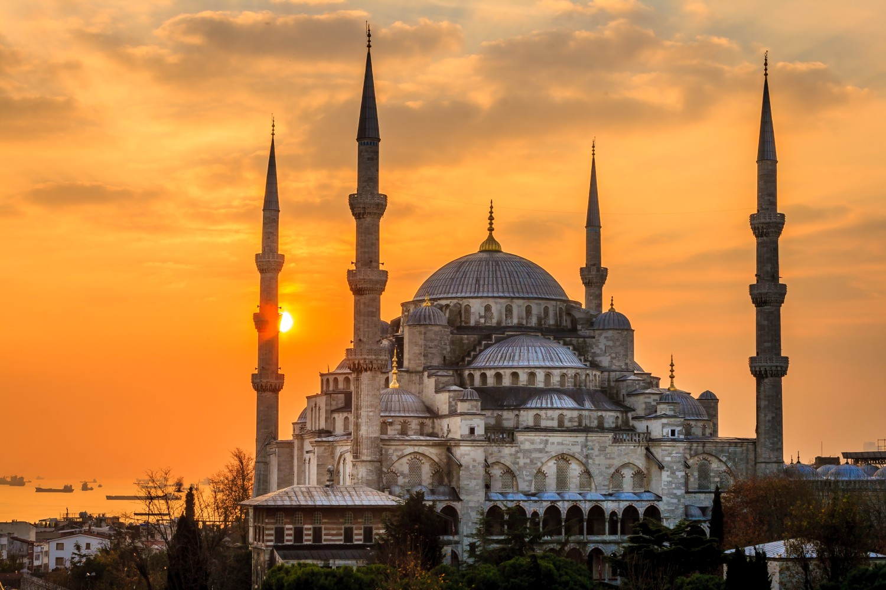

AS 5 REGRAS DOS MUÇULMANOS
O islamismo deriva da palavra de origem árabe islam,
cuja tradução literal é submissão (á vontade de Deus, ou Alá)
e se sustenta sobre o que são chamados de cinco pilares da religião:
a profissão de fé, a prece legal, o jejum no ramadã, a peregrinação
á Meca e o pagamento de esmola legal.
PRIMEIRA REGRA: A profissão da fé
A profissão de fé consiste na recitação da fórmula "Não há outro Deus senão Alá e Maomé é o seu profeta". É essencial, para tornar-se muçulmano (cuja tradução literal é crente), dizer a frase. Ela é repetida sempre, em todas as orações.
SEGUNDA REGRA: A prece legal
A prece legal deve ser feita 5 vezes ao dia, antes do nascer do sol, ao meio-dia, entre as 15h e as 17h, depois do pôr-do-sol e depois da noite cair. O fiel, purificado pela limpeza dos pés, mãos e rosto com água, deve estar sempre voltado na direção de Meca. Por isto sempre há uma fonte na proximidade de uma mesquita.
TERCEIRA REGRA:O jejum de ramadã
A tradição estabelece que muçulmanos adultos devem manter o jejum entre o nascer e o pôr do sol de cada dia do Ramadã. Estão excluídos da prática: crianças, idosos, doentes, mulheres grávidas, amamentando ou menstruadas e pessoas que estejam viajando.
QUARTA REGRA:A peregrinação a Meca
A peregrinação consiste em uma série de ritos religiosos realizados na cidade sagrada e em seus arredores. Os fiéis percorrem diversos locais na Arábia Saudita, como Arafat, Muzdalifa e o Vale da Mina. Mas a jornada começa e termina, tradicionalmente, em Meca, onde o profeta Maomé iniciou a sua pregação.
QUINTA REGRA:O pagamento de esmola legal
O zakat é um dos cinco pilares do Islam, e é considerado obrigatório para aqueles que possuem condições de praticá-lo. Seu valor corresponde a 2,5% de toda riqueza que o indivíduo possuir, abatendo suas dívidas.
COMO SURGIU A RELIGIÃO DOS MUÇULMANOS:
O Islamismo surgiu no começo do século VII e rapidamente se difundiu entre as tribos árabes, unindo-as em torno da mesma fé. Em poucas décadas, os árabes conquistaram um império, cujo apogeu se deu no tempo dos califados omíada e abássida, mas que se dissolveu a partir do século X.
QUE POVO DEU A ORIGEM AOS MUÇULMANOS:
civilização islamica teve a sua origem na península arábica (situada entre a Ásia e a África). Habitada por diferentes povos semitas (árabes, hebreus, assírios, fenícios e armaicos), organizados em tribos, a Arábia não tinha unidade política, estando dividida em clãs familiares.
>
A QUEM OS MUÇULMANOS ADORAM:
Os Muçulmanos defendem que Maomé foi o mensageiro final do Islã, ou seja, não o único, mas o último de uma sucessão de mensageiros que foram enviados por Deus. A fé islâmica não desconsidera outros nomes, inclusive o de Jesus Cristo, a quem consideram simplesmente como um profeta.
religiao